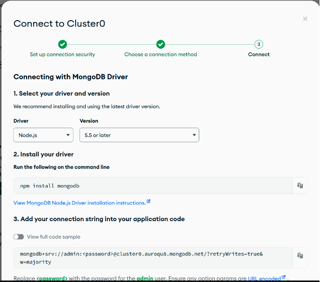

Instalação
Para realizar a instalação do MongoDB no nosso ambiente, precisamos acessar o navegador, procurar por “mongodb download” e acessar o link MongoDB Community Download. Ao abrir o site, verifique se a versão selecionada é a MongoDB Community Edition, selecione a versão, o seu sistema operacional, o pacote e clique em Download para baixar o arquivo:
Feito isso, espere o download terminar e execute o instalador.
Ao iniciar o assistente de instalação, uma janela de boas-vindas ficará disponível. Clique em next e inicie o processo.
Aceite os termos de licença, marcando a opção I accept the terms in the license agreement (eu aceito os termos do contrato de licença) e clicando em Next.

Na janela seguinte, você pode escolher o tipo de configuração, que são duas opções:
- Completa (recomendado para a maioria dos usuários) que instala o MongoDB e as ferramentas do MongoDB no local padrão; e Personalizada, que permite especificar quais executáveis são instalados e onde.
- Personalizada, que permite especificar quais executáveis são instalados e onde.
Nas opções de configuração de serviço, você tem as seguintes opções:
Ao marcar a opção de instalar o MongoDB como um serviço, você teria duas opções disponíveis: executar o serviço como usuário do serviço de rede (padrão) ou executar o serviço como um usuário local ou de domínio
Em nome do serviço, especifique o nome do serviço. Ele já vem com o nome padrão MongoDB, mas também é possível renomear.
Em Diretório de dados, especificamos o diretório de dados. Se o diretório não existir, o instalador criará o diretório e configurará o acesso ao diretório para o usuário do serviço
Já em Diretório de registros, especificamos o diretor de Log. Assim como no diretório de dados, se o diretório não existir, o instalador criará o diretório e configurará o acesso ao diretório para o usuário do serviço.
Você pode manter as configurações padrão e clicar no botão de Next para prosseguir com a instalação:
Criação de um Banco de Dados
Uma vez instalado, você pode iniciar o MongoDB a partir da linha de comando usando o comando 'mongod'. Em seguida, você pode se conectar ao servidor MongoDB usando o shell MongoDB com o comando 'mongo'. No shell MongoDB, você pode executar comandos para criar bancos de dados, inserir e recuperar dados, e assim por diante.
Para este conteúdo, utilizamos para a criação de um banco de dados o serviço Mongo Atlas:
- 1 - Acesse o site Mongo Atlas e crie uma conta, caso não possua, ou faça login. Após logar, crie uma nova organização caso seja seu primeiro acesso, com o nome que desejar (por exemplo, alura).
- 2 - Clique no botão New Project à direita da tela e dê um nome ao seu novo projeto. Clique em Next.
- 3 - O próximo passo é definir permissões. Você pode clicar em Create Project sem alterar nada.
- 4 - Na tela Create a database clique no botão Build a database para criar uma nova instância de banco de dados.
- 5 - Escolha a opção M0 FREE, role a tela e selecione a opção de provider AWS, região us-east-1. Em seguida, você pode dar um nome ao cluster ou manter a opção Cluster0. Clique em Create.
- 6 - Nas opções de segurança, crie um usuário com a opção Username and Password para acesso ao banco. Por exemplo, username admin e senha admin123. Clique em Create user.
- 7 - Na seção Where would you like to connect from? escolha My Local Environment. O IP de sua máquina já está automaticamente adicionado como IP permitido para acesso, mas para ser possível acessar livremente o banco, adicione também o IP 0.0.0.0/0 e clique em Add entry. Em seguida conclua clicando em Finish and close.
- 8 - Clique em Go to Databases no modal para voltar para a tela principal de databases.
- 9 - Clique em Connect no Cluster0, que acabamos de criar.
- 10 - No menu Connect, escolha a opção Driver. A instalação com npm install mongodb já foi feita pois a lib do MongoDB para Node.js já está adicionada no package.json então este passo não é necessário. Copie a string de conexão abaixo:
Substitua admin: password pelos dados de username e password que você criou nos passos anteriores, por exemplo, admin:admin123. Clique em Close para fechar a janela.
Operações CRUD
MongoDB é um banco de dados NoSQL orientado a documentos, o que significa que ele armazena dados em documentos BSON (uma representação binária de JSON). As operações CRUD (Create, Read, Update, Delete) são as operações básicas que você pode realizar em um banco de dados MongoDB.
- Criação (Create): No MongoDB, você pode usar o método insertOne() ou insertMany() para inserir um ou mais documentos em uma coleção. Por exemplo:
- Leitura (Read): Você pode usar o método find() para ler documentos de uma coleção. Este método retorna um cursor para os documentos que correspondem aos critérios de consulta. Por exemplo:
- Atualização (Update): O MongoDB fornece os métodos updateOne(), updateMany() e replaceOne() para atualizar documentos em uma coleção. Por exemplo:
- Exclusão (Delete): Você pode usar os métodos deleteOne() ou deleteMany() para excluir documentos de uma coleção. Por exemplo: